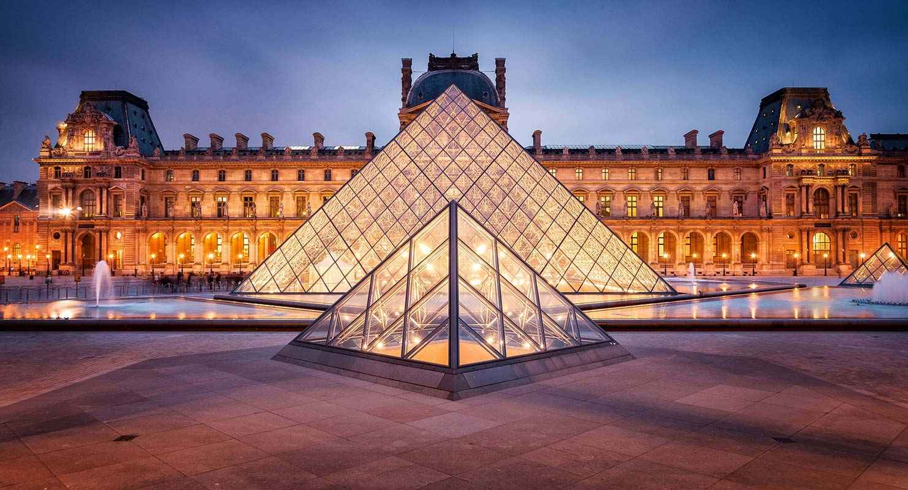

Descubre París
París, la ciudad que se erige como la capital de Francia, se ha ganado merecidamente el título de "Ciudad del Amor". Con su arquitectura icónica, una historia que trasciende los siglos y un ambiente que palpita con romance, París se presenta como un destino que no solo atrae, sino que cautiva a visitantes de todos los rincones del mundo. La silueta de la Torre Eiffel, majestuosa y elegante, se erige como el emblema universal de la ciudad, iluminando el horizonte parisino con su resplandor. Esta estructura icónica no solo es un monumento, sino un testigo de la riqueza cultural y artística que París alberga en cada rincón de sus calles empedradas. La historia de París se despliega a través de sus monumentos históricos y museos que albergan tesoros artísticos invaluables. Desde la grandiosidad del Louvre hasta la serenidad de Notre Dame, la ciudad respira historia en cada piedra y cada obra de arte. El ambiente romántico de París se manifiesta en sus encantadores bulevares, cafés con encanto y puentes que cruzan el río Sena. Un paseo a orillas del Sena, especialmente al atardecer, revela una ciudad que se viste con la luz dorada del amor y la inspiración
Atracciones en París
-
Torre Eiffel
La Torre Eiffel es uno de los monumentos más emblemáticos de París y ofrece vistas panorámicas de la ciudad.

-
Museo del Louvre
El Museo del Louvre alberga una impresionante colección de arte, incluyendo la famosa Mona Lisa.
 -
Catedral de Notre Dame
La Catedral de Notre Dame es una obra maestra de la arquitectura gótica y un símbolo de la historia de París.

Itinerario de 5 días y 4 noches
Día 1: Explora la Torre Eiffel y disfruta de vistas panorámicas. Cena en un encantador bistró.
Día 2: Visita el Museo del Louvre y pasea por los Jardines de las Tullerías.
Día 3: Explora la Catedral de Notre Dame y disfruta de un crucero nocturno por el río Sena.
Día 4: Descubre el encanto de Montmartre y visita la Basílica del Sagrado Corazón.
Día 5: Disfruta de un relajante día en los Jardines de Luxemburgo antes de partir.
Costos de Viaje
Costo estimado para 5 días y 4 noches:
- Traslados Desde el aeropuerto hasta en centro de la ciudad: $ 50-100 por persona
- Hospedaje: $150-300 por noche
- Entradas a sitios turísticos: $80
- Comida: $50-100 por día
- Transporte local: $20-30 por día
- Seguro de viaje: $70
- Recuerdos y souvenirs: $50
- Costos adicionales: $100
- Total estimado: $1000-1200